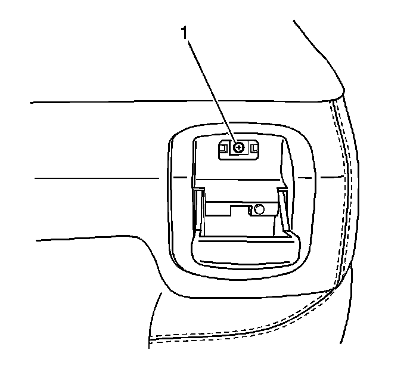

Rear Seat Back Cushion Cover and Pad Replacement - Right Side
Rear Seat Back Cushion Cover and Pad Replacement - Right Side
Removal Procedure
1. Remove the seat from the vehicle. Refer to Rear Seat Replacement (Rear Seat Replacement) .
2. Remove the head restraints. Refer to Rear Seat Head Restraint Replacement (Rear Seat Head Restraint Replacement) .
3. Remove the head restraint guides. Refer to Rear Seat Head Restraint Guide Replacement (Rear Seat Head Restraint Guide Replacement) .
4. Remove the right seat cushion. Refer to Rear Seat Cushion Replacement - Right Side (Rear Seat Cushion Replacement - Right Side) .

5. Remove the seat release latch screw (1).
6. Disconnect the release cables.
7. Remove the latch from the seat.
8. Remove the seat back cover.
Installation Procedure
1. Install the seat back cover on to the seat back.
2. Install the seat release cable to the release latch.
3. Install the seat release latch to the seat.
Notice: Refer to Fastener Notice (Fastener Notice) .
4. Install the seat release latch screw (1).
Tighten the screw to 2 N.m (18 lb in).
5. Install the right seat cushion. Refer to Rear Seat Cushion Replacement - Right Side (Rear Seat Cushion Replacement - Right Side) .
6. Install the head restraint guides. Refer to Rear Seat Head Restraint Guide Replacement (Rear Seat Head Restraint Guide Replacement) .
7. Install the head restraints. Refer to Rear Seat Head Restraint Replacement (Rear Seat Head Restraint Replacement) .
8. Install the seat in the vehicle. Refer to Rear Seat Replacement (Rear Seat Replacement) .